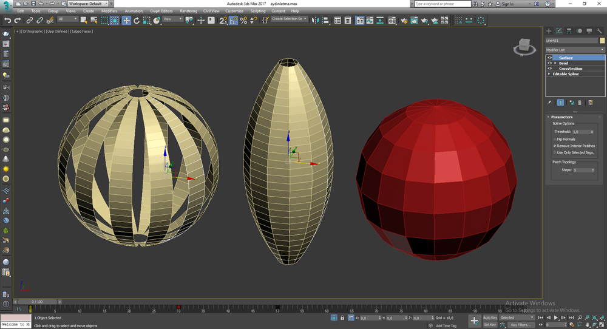
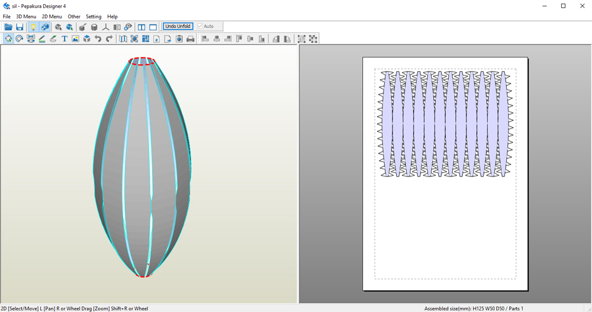
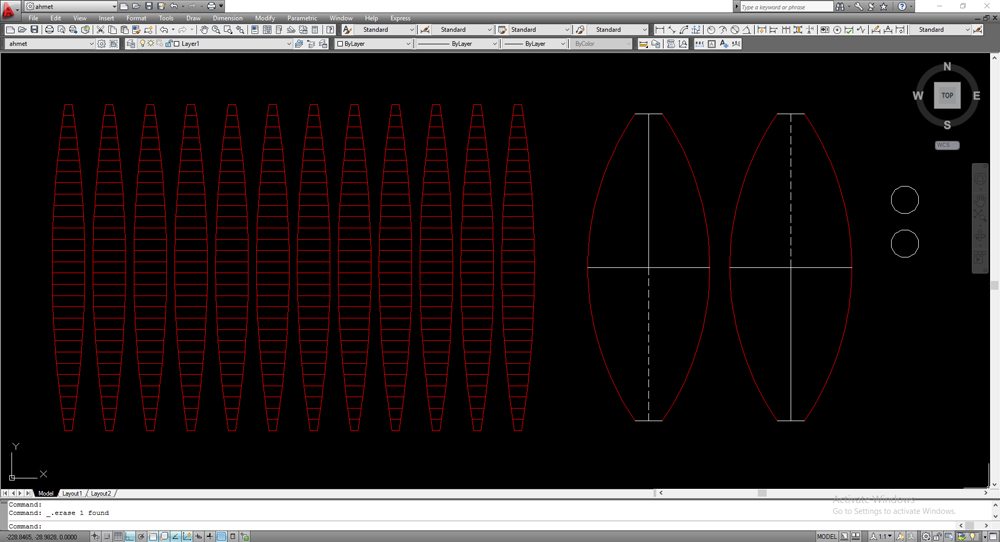
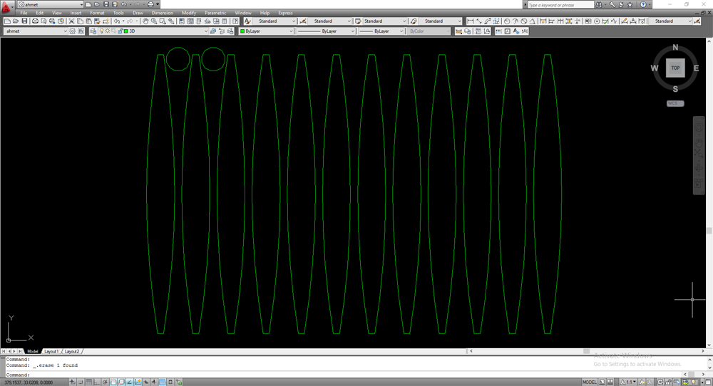
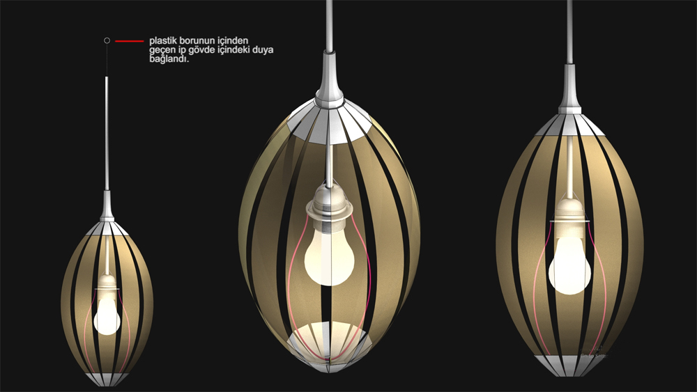
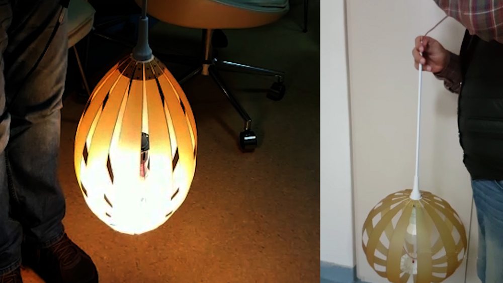
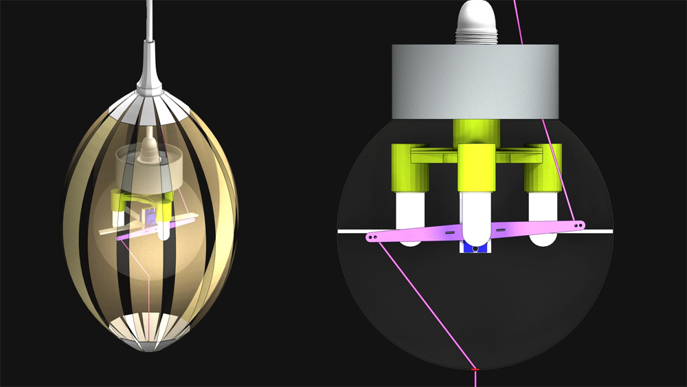
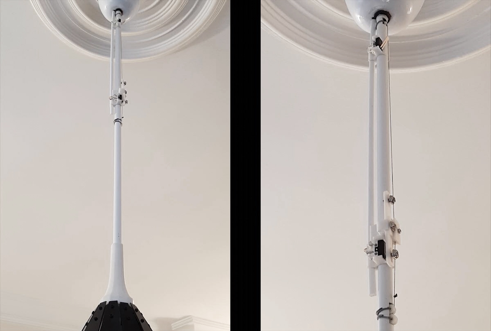
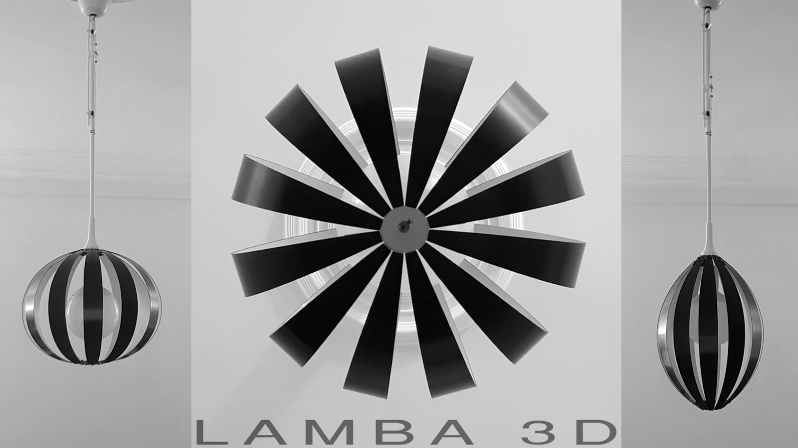

Lamba3D
Lamba3D projemin doğuşundan bugüne başından geçenler…Başlıyooooor.
Giriş
İşim icabı günümün 10 saati bilgisayar karşısında geçiyor. Yakınıyormuyum hayır…
Yine iş başındayım ama herzamanki gibi çalışırken aklım başka şeylerle meşgul.
Bunu araba kullanırken başka şeylerle meşgul olmaya benzetiyorum. Gerçi arabam da yok yani şoför de değilim. Yıllardır bindiğim arabalarda şoförleri ve ne yaptıklarını izlemekten sanırım fahri şoförlük ünvanını hak etmişimdir.
Yaklaşık bir yıldır Arduino ve sensörler konusunda vakit buldukça yazı okuyorum hatta uygulamalar da yapıyorum. Lamba3D bu merakların sonunda çıkan projelerden biri.
1.Bölüm
Daha önceleri oldukça büyük açıklıkları kapatabilecek bir şemsiye tasarlamıştım. Bu çalışmamın kağıt maketi masamın üzerinde duruyor. Ara ara elime alıp açıp kapatırım.
Yine böyle bir anda, bir kürenin esnetilmesiyle nasıl bir şekil oluşur acaba diye düşünmeye başladım. Bunun gerçekte neye benzeyebileceğini anlamam için 3ds Max programında 3d model çizimini ve animasyonunu yapmalıydım ya da kağıtan maketini.

Lamba 3d Max modeli
3D kağıt maketler için çok kullanışlı bir program olan Pepakura‘da 3d model çizimin açılımını çıkartıp printerden bastırdım. Ancak istediğim gibi olmadı.

Pepakura 3d model açılımı
Bu görsel aslında yapmak istediğim hareketli maketin nasıl olacağı hakkında ipucu veriyordu. Buradaki çizimi DXF formatında Autocad programına çağırıp daha temiz bir çizim yapabilirdim. Öyle de yaptım.

Autocad te 3d modelin açılımını istediğim gibi çizdim
2.Bölüm
Çizimi printerden A4 dosya kağıdına basıp, makasla dikatlice kesip yapıştırdım.

Lamba 3d model açılım printer baskısı

Lamba 3d model parçaları bantla yapıştırdım
Sonuç harika…
3.Bölüm
Bu hareketi simüle eden bir 3d model animasyonu yapmamın bu formla daha neler yapabileceğim hakkında daha fazla fikir vereceğini düşündüm.
Yaptığım animasyonu tekrar tekrar izlerken bu hareketi, içinde bir ampul olan aydınlatma olarak hayal etmeye başladım. Kapalıyken ışığı hapseden, sonra istendiğinde kademeli olarak açılıp etrafı kademesine göre aydınlatan bir lamba, neden olmasın…
4.Bölüm
Açılıp kapanma hareketini mekanik olarak nasıl sağlayacaktım. Yani bu şey boşlukta çalışmayacaktı. En azından ya tavandan sarkan bir aydınlatma olacak yada ayaklı bir aydınlatma olacaktı. Tercihimi tavandan sarkan aydınlatma olarak kullandım ve bu doğrultuda neler yapabileceğime bakmam gerekiyordu.
Malzeme ığışı kısmen geçirmeyen yarı şeffaf ve uygun esneklikte bir şey olmalıydı. Kırtasiyeleri gezdim ve maket yapımında kullanılan renkli asetat gibi bir malzeme buldum.
Printer’ dan baskı için kullandığım çizim dosyasını ufak bir düzeltme ile sadeleştirdim. Çizimin A4 boyutları içerisinde olup olmadığını kontrol ettim ve lazer kesim için arayışlara başladım. Beşiktaş’ ta gayet ilgili ve her zaman yoğun olan bir lazer kesim atölyesi buldum.

Lazer kesim için hazırladığım cad dosyası
Lazer kesimden sonra parçaları elektrik bandıyla alttan ve üstten birbirlerine 12 gen bağlantı parçasıyla bantladım.Hatta hareket ederken parçalar yapıştıkları yerden ayrılmasın diye iç kısımlardan da aynı şekilde bantladım. Şimdi gayet sağlam oldu.

Kırtasiyeden aldığım A4 boyutunda renkli asetat malzemenin, lazer kesimden sonra elektrik bandıyla bantlandıktan sonraki hali.
Elimde, 3D modelini çizdiğim ve animasyonunu yaptığım hayali modelin gerçeğini tutuyordum. Bu çok güzel bir duygu…
5.Bölüm
Şimdi hareketi nasıl sağlayacaktım onu düşünmeye başladım. Bu hareketi manuel değil de elektrik motorlu hatta uzaktan kumanda ile yapmayı düşünüyordum. Ancak uzaktan kumanda için alıcı verici devresi hazırlamam gerekiyordu. Bunu daha sonra da yapabilirdim.
Elimde servo motor, potansiyometre, Arduino UnoR3 ve yeteri kadar kablom vardı. Bunlarla bir an önce, kontrollü açıp kapama yapabilirdim. Saydığım parçaların hepsini ve daha fazlasını Çin alışveriş sitesi Aliexpress’ ten yapıyorum. Gerçi elime geçmesi 1-3 hafta arasında oluyor ama bu da ayrı bir keyif…

Hareketi sağlayabilmek için Servo Motor, Potansiyometre ve Arduino Uno R3
Bu elemanlarla internette bolca bulabileceğiniz bağlantılardan birini, projeme uygun olarak hazırladım.

Arduino, potansiyometre ve servo motorun asetat gövdeyi nasıl esnetebileceğini öngördüğüm bağlantı animasyonu
Servo motoru asetat gövdenin içine plastik boruya vida ile monte edip, buradaki gibi hareketi sağladım.

Arduino(A)+Potansiyometre(P)+Servo motor(S) = APS 🙂
APS üçlüsüne istediğimiz şeyleri yaptırabilmek için, şimdiye kadar hiç değinmediğim işin bir de yazılım(Y) kısmı var… APS+Y= mekatronik…
6.Bölüm
Hareketi ve lambanın açılıp kapanmasını daha işin başında uzaktan kumanda ile yapmayı düşünmüştüm ancak bunu sağlayacak elektronik elemanlar elimde yoktu.
İşin mekaniği ile uğraşırken bir taraftan da uzaktan kumandayı hangi yöntemle yapsam diye düşünüyordum. Kızılötesi, Wi-Fi, Rf , Bluetooth hangisi daha pratik. Biraz araştırma yapınca Bluetooth ile bağlanmanın daha güncel ve kolay olacağını düşündüm. Neredeyse tüm cep telefonlarının Bluetooth iletişimi var. Verici olarak cep telefonu iyi bir fikir gibi. Yani kumandam sürekli yanımda, gerekli olduğunda şifresini bildiğim yakınımdaki lambaları kontrol edebilirdim. Süpeeeer…
Hemen aliexpress‘ ten HC-05 Bluetooth iletişim modülünün siparişini verdim başladım program arayışlarına…

Bluetooth modülü HC-05 – önden ve arkadan görünüşü
Şimdi çalışma devreme bir de Bluetooth alıcı eklemeli ve önceki Arduino programımda revizyonlar yapmalıydım. En önemlisi de yazılım kısmı, telefonuma bir aplikasyon bulmalı veya yazmalıyım. Bu bölümü ayrı bir sayfada ayrıntılarıyla anlatmayı düşünüyorum…
7.Bölüm
Artık Lambanın gerçek boyutlarında denemelerine başlamamın zamanı gelmişti. Yani protatip yapmalıydım. Bu safhada beni en çok zorlayan ve hala arayışlarımın sürdüğü esnek dış kabuk. Esnekliği ve ışık geçirgenliği konusunda hala aradığım malzemeyi bulabilmiş değilim. Bu yazıyı hazırladığım günlerde iki farklı malzemeyle deneme yaptım. Bunları da paylaşacağım tabiki…
Boyutlar büyüdüğünde lambanın tasarımında da farklı şeyler düşünmeye başladım. Mesela ortadaki ışığı verecek ampul ve hareketi sağlayacak servo motorun nasıl beraber olacağı konusu.
Önce, hareketi sağlayacak olan mekanizmayı önceki tasarımdan farklı olarak Lambanın üst bölümünde yapmayı düşündüm.


Ampulü bağlamak için böyle bir yöntem.

Hareketi sağlamak için de böyle bir yöntem.
Projeyi animasyondaki gibi yapmayı başardım. Ancak hareketi şimdilik manuel yapıyordum, hareketi sağlayacak elektronik elemanları ve motoru daha sonra da bağlayabilirdim.
Hareketi yaparken, maksimum açıklık için ipi 15 cm kadar çekmem gerekiyordu. Bu düşündüğüm servo motor hareketi için oldukça fazla mesafeydi. Servo 180 ° dönebiliyordu. Bu dönüş açısıyla 15 cm çekme sağlayamazdım.
Servo yerine DC motor yada Step motor düşünmeye başladım. Ama her ikisi için de ayrı kontrol kartları gerekiyor. DC için hız kontrol kartı. Step için sürücü kartı. Oysa bu işi minimum elemanla yapmalıyım diye yola çıkmıştım. Yine düşünmeye başladım. Proje içinde projeler olmaya başladı 🙂

Lamba3D aydınlatmaya başladı…
8.Bölüm
Şimdi bir önceki yöntemi geliştirmemin daha uygun olacağını düşünmeye başladım. Lamba ve servo beraber içeride bir yerde olmalıydı.
Globu ve içindeki servo’yu bağlayacağım aparatı, 3D printer’da yaptırabilirmiydim. Bunun için şöyle bir 3D çizim yaptım ve hemen çizimi yanıma alıp Beşiktaş’ ta 3D print servisi veren ve zengin parkuru ile gözdolduran, yardımsever 3D print servisi tiridi firmasını ziyaret ettim. Görüşmeler sonucu çizdiğim ürünün üretilebileceğini öğrendim. Ancak bunu daha sonraki aşamalarda fazla adette üretileceğini düşünce maliyetinin uygun olmayacağına karar verdim.

3D printer da bastırmayı düşündüğüm modeller
Belki istediğim ölçülere yakın hazır bir ürün bulabilirdim. Plastik bir glob bulsam, içine lamba ve servoyu yerleştirebilirmiydim acaba. Evet buldum. Nalburda 14.5 cm çapında duyu ile beraber plastik globu görünce hemen aldım.


Lambayı ve servoyu, globun içine montaj yapabilmem için globu maket bıçağıyla iki parçaya ayırdım…
Daha sonra, duy kısmında da değişiklik yapmam gerekiyordu. Lambayı taşıyacak çubuk duya bağlı olmalıydı. Tekli avize duyuyla globun duyunu birleştirdim. İşte sonuç…


Globun ikiye ayırdığım parçalarını birbirine nasıl tutturacaktım. Zaman zaman açılıp kapanabilecek bir sistem bulmalıydım. Bir yol buldum.İşte sonuç…


Glob içinin yeni imalatına başlayabilirim. Servo ve lamba nasıl sığacak. Üstelik nasıl bir lamba olmalıydı. Önceden öngörülerim vardı ama gerçekler, bazen hiç te tahminim gibi olmayabiliyor…


Model animasyon çalışmasında bu iş oldu gibi görünüyor. Dış kabuğu maksimum esnetmek için 15 cm lik bir çekme gerekiyordu. Servonun herbir koluyla 7.5 cm lik çekme yaparak istediğim sonucu alabilirim.
Ampul olarak E27 duya uygun ampul yerine E14 duya uygun led ampul kullanmanın boyutlarından dolayı daha uygun olacağını sanıyorum.

Bir tane E14 Led ampul yetmeyecek galiba. İçeride gölgelenmeler de sorun çıkarabilir.
9.Bölüm
Aliexpress’ te yaptığım araştırmada 3 tane E14 led ampul takılabilen aparatlar görmüştüm.Tam ölçüleri elimde olmadığı için tahmini bir çalışma yapmak zorunda kaldım. Gerçeği gelince ne olacak bakalım 🙂

Tahmini ölçülere göre yaptığım animasyonda durum iyi ama karışık görünüyor.
10.Bölüm
Evet aparat ve ampuller artık elimde, globun içine sığacak mı? Servo ve hareketli kollarla beraber neler olacak 🙂


Globun içine sığdı ancak servonun kollarının çekme gücü çok düşük oldu. Kolların çekme noktaları servonun merkezinden uzaklaştıkça dış kabuğu esnetecek kuvveti yakalayamadım. Servonun germe iplerini çekebilmek için merkeze ne kadar yakın toplama-bırakma olursa o kadar kuvveti artmış oluyor. Bunu daha önceden biliyordum ancak yine de dış kabuğu esnetebilir diye umuyordum. Her zaman umduğumuz olmuyor 🙂
11.Bölüm
Yeni bir yönteme geçtim ve bu sefer oldu galiba.
Dış kabuğu esnetecek gücü sağlayabilmek için yine SG90 servoyu 3D printerda bastığım 8 mm çaplı bir makarayla merkezde kullanıyorum. Motoru lambanın tavanda elektrik bağlantısını gizlemek için kullandığım kabın içinde, lambanın çubuğuna bağlıyorum.


Bunun için yine 3dsMax’ te çizip 3D printerdan bastığım parçaları kullandım ( bu projenin en zorlandığım kısmı burası oldu ) .
Küçük bir alanda hem sağlam hem de uygun yerlere bağlayabilmek ve motordan maksimum verim elde etmek. Bu parçayı işler olarak tutturabilmek için sıcak silikondan da çok fazla destek aldım.

Bu yöntemle dış kabuğu rahatlıkla istediğim seviyeye kadar çekip durabiliyorum. SG90 gücünü burada da gösterdi. Dış kabuğun esnemesi için gereken çekmeye ilave olarak kabuğun ağırlığı da eklenince hiçte azımsanmayacak bir güç gerekiyor…
12.Bölüm
Aydınlatma olarak 90mm çaplı LED glob ampül denemeye karar verdim. Tabi bu karara varabilmek için ampülün duyunu plastik glob kısmından maket bıçağı yardımıyla ayırıp içini görmem gerekiyordu. İçi tam istediğim gibi. Orta akstan geçireceğim gergi ipi globun içinden rahatlıkla geçebilir.
Germe işlemi için ampulün duyuna tam arkasından ve globun altından 1 mm çaplı delik deldim. Globun çalışması için delinmesinde herhangi bir sorun yok. LED aydınlatmalar akkor lambalar gibi değil.
Final Bölümü
Lambanın açılır kapanır kabuğunun hareket limitlerinin tespitini fiziki temasla yaptım.
Lambayı taşıyan boruya hareketli kabuğun hareket sınırlarını belirlemek için alt ve üst durma noktalarına mini anahtarlar koydum. İki anahtarın arasındaki mesafe yaklaşık 15 cm civarında. Hareketi sağlayan ipin üzerine sabitlediğim parça hangi taraftaki anahtarı tetiklerse program hem hareket sonunu algılıyor hem de aşağıda mı yukarıda mı olduğuna göre devam ediyor.


Dış kabuğumuzun hareket sistemi.

Dış kabuğumuzun hareket sistemini video olarak ayrıca bu linkten izleyebilirsiniz.
Lamba projemizi burada sonlandırıyoruz, umuyoruz keyif almışsınızdır.
Projemizin elektronik ile ilgili bölümü için;
Projemizin yazılım ile ilgili bölümü için;
yazılarımızı takip edebilirsiniz.
Benim için oldukça eğlenceli ve öğretici bir proje oldu 🙂
Sonuçta telefonun Bluetooth bağlantısıyla, lambanın ve hareketli kabuğun açılıp kapanmasını kontrol edebiliyorum. Son durumu buradan izleyebilirsiniz.

Devam edecek…
İlk yayın: https://pointpointblog.wordpress.com/2017/06/17/lamba3d/
Yorumlar (2)
Yorumlar blogun ilk yayınından arşivlenmiştir; yeni yorum alınmıyor.
Müthiş bir proje elinize sağlık. Ustam bire bir tanıdığım insanlar arasında babamda sonra hayran olduğum nadir insanlardan birisiniz. sizden öğreneceğmiz çok şey var çünkü sizin gibi hiç usanmadan sabırla öğreten hoca bulunmuyor malesef. Kendi adıma Herşey için ne kadar teşekkür etsem yetmez.
Değerli görüşlerin için çok teşekkür ederim kalfam… Elimden geldiğince birşeyler yapmaya ve anlatmaya devam edeceğim.